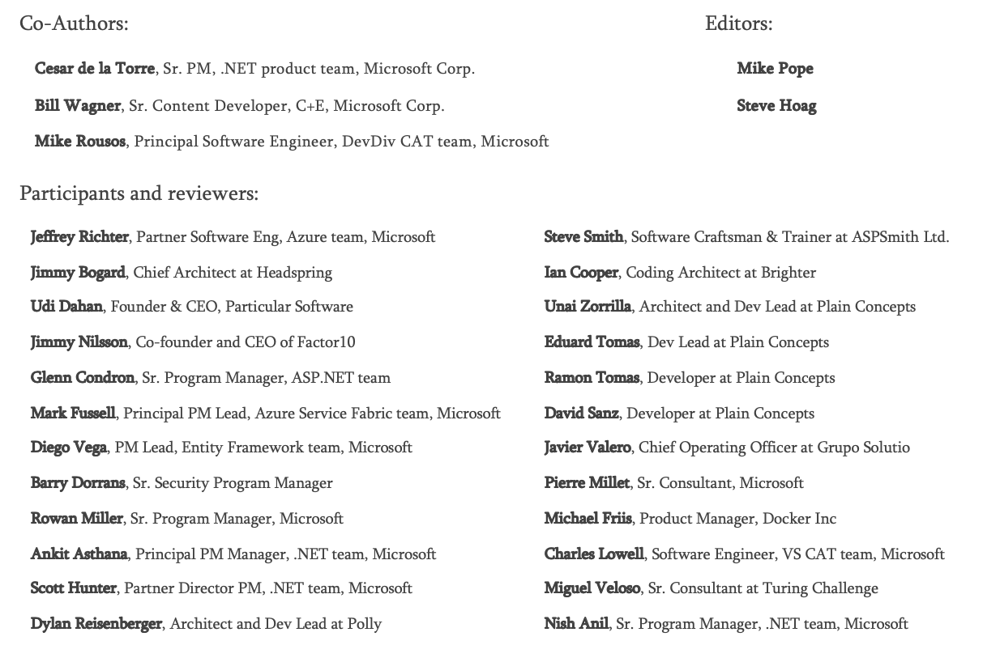

EDITION v2.2
DOWNLOAD available at: https://aka.ms/microservicesebook
PUBLISHED BY
Microsoft Developer Division, .NET and Visual Studio product teams
A division of Microsoft Corporation
One Microsoft Way
Redmond, Washington 98052-6399
Copyright © 2019 by Microsoft Corporation
All rights reserved. No part of the contents of this book may be reproduced or transmitted in any form or by any means without the written permission of the publisher.
This book is provided “as-is” and expresses the author’s views and opinions. The views, opinions and information expressed in this book, including URL and other Internet website references, may change without notice.
Some examples depicted herein are provided for illustration only and are fictitious. No real association or connection is intended or should be inferred.
Microsoft and the trademarks listed at http://www.microsoft.com on the “Trademarks” webpage are trademarks of the Microsoft group of companies.
Mac and macOS are trademarks of Apple Inc.
The Docker whale logo is a registered trademark of Docker, Inc. Used by permission.
All other marks and logos are property of their respective owners.
Contents
What this guide does not cover
Related microservice and container-based reference application: eShopOnContainers
Introduction to Containers and Docker
Comparing Docker containers with virtual machines
Docker containers, images, and registries
Choosing Between .NET Core and .NET Framework for Docker Containers
When to choose .NET Core for Docker containers
Developing and deploying cross platform
Using containers for new (“green-field”) projects
Creating and deploying microservices on containers
Deploying high density in scalable systems
When to choose .NET Framework for Docker containers
Migrating existing applications directly to a Windows Server container
Using third-party .NET libraries or NuGet packages not available for .NET Core
Using .NET technologies not available for .NET Core
Using a platform or API that does not support .NET Core
Decision table: .NET frameworks to use for Docker
What OS to target with .NET containers
.NET Core and Docker image optimizations for development versus production
Architecting container and microservice-based applications
Containerizing monolithic applications
Deploying a monolithic application as a container
Publishing a single-container-based application to Azure App Service
State and data in Docker applications
Data sovereignty per microservice
The relationship between microservices and the Bounded Context pattern
Logical architecture versus physical architecture
Challenges and solutions for distributed data management
Challenge #1: How to define the boundaries of each microservice
Challenge #2: How to create queries that retrieve data from several microservices
Challenge #3: How to achieve consistency across multiple microservices
Challenge #4: How to design communication across microservice boundaries
Identify domain-model boundaries for each microservice
The API gateway pattern versus the Direct client-to-microservice communication
Direct client-to-microservice communication
Why consider API Gateways instead of direct client-to-microservice communication
What is the API Gateway pattern?
Main features in the API Gateway pattern
Using products with API Gateway features
Drawbacks of the API Gateway pattern
Communication in a microservice architecture
Asynchronous microservice integration enforces microservice’s autonomy
Request/response communication with HTTP and REST
Push and real-time communication based on HTTP
Asynchronous message-based communication
Single-receiver message-based communication
Multiple-receivers message-based communication
Asynchronous event-driven communication
A note about messaging technologies for production systems
Resiliently publishing to the event bus
Creating, evolving, and versioning microservice APIs and contracts
Microservices addressability and the service registry
Creating composite UI based on microservices
Resiliency and high availability in microservices
Health management and diagnostics in microservices
Using diagnostics and logs event streams
Orchestrators managing health and diagnostics information
Orchestrating microservices and multi-container applications for high scalability and availability
Software platforms for container clustering, orchestration, and scheduling
Using container-based orchestrators in Microsoft Azure
Using Azure Kubernetes Service
Development environment for Kubernetes
Getting started with Azure Kubernetes Service (AKS)
Deploying with Helm charts into Kubernetes clusters
Use Azure Dev Spaces for your Kubernetes application lifecycle
Stateless versus stateful microservices
Using Azure Service Fabric Mesh
Choosing orchestrators in Azure
Development Process for Docker-Based Applications
Development environment for Docker apps
Development tool choices: IDE or editor
.NET languages and frameworks for Docker containers
Development workflow for Docker apps
Workflow for developing Docker container-based applications
Step 1. Start coding and create your initial application or service baseline
Set up your local environment with Visual Studio
Step 2. Create a Dockerfile related to an existing .NET base image
Using an existing official .NET Docker image
Using multi-arch image repositories
Multi-stage builds in Dockerfile
Creating your base image from scratch
Step 3. Create your custom Docker images and embed your application or service in them
Creating Docker images with Visual Studio
Working with docker-compose.yml in Visual Studio 2017
Step 5. Build and run your Docker application
Option A: Running a single-container application
Option B: Running a multi-container application
A note about testing and deploying with orchestrators
Step 6. Test your Docker application using your local Docker host
Testing and debugging containers with Visual Studio 2017
Testing and debugging without Visual Studio
Simplified workflow when developing containers with Visual Studio
Using PowerShell commands in a Dockerfile to set up Windows Containers
Designing and Developing Multi-Container and Microservice-Based .NET Applications
Designing a microservice-oriented application
eShopOnContainers: A reference application for .NET Core and microservices deployed using containers
Data sovereignty per microservice
Benefits of a microservice-based solution
Downsides of a microservice-based solution
External versus internal architecture and design patterns
The new world: multiple architectural patterns and polyglot microservices
Creating a simple data-driven CRUD microservice
Designing a simple CRUD microservice
Implementing a simple CRUD microservice with ASP.NET Core
Implementing CRUD Web API services with Entity Framework Core
The DB connection string and environment variables used by Docker containers
Implementing versioning in ASP.NET Web APIs
Generating Swagger description metadata from your ASP.NET Core Web API
How to automate API Swagger metadata generation with the Swashbuckle NuGet package
Defining your multi-container application with docker-compose.yml
A simple Web Service API container
Using docker-compose files to target multiple environments
Using multiple docker-compose files to handle several environments
Building optimized ASP.NET Core Docker images
Using a database server running as a container
SQL Server running as a container with a microservice-related database
Seeding with test data on Web application startup
EF Core InMemory database versus SQL Server running as a container
Using a Redis cache service running in a container
Implementing event-based communication between microservices (integration events)
Using message brokers and services buses for production systems
Publish/Subscribe (Pub/Sub) pattern
Defining an event bus interface
Implementing an event bus with RabbitMQ for the development or test environment
Implementing a simple publish method with RabbitMQ
Implementing the subscription code with the RabbitMQ API
Publishing events through the event bus
Designing atomicity and resiliency when publishing to the event bus
Implementing atomicity when publishing integration events through the event bus
Receiving messages from subscriptions: event handlers in receiver microservices
Idempotency in update message events
Deduplicating integration event messages
Deduplicating message events at the EventHandler level
Deduplicating messages when using RabbitMQ
Testing ASP.NET Core services and web apps
Implementing unit tests for ASP.NET Core Web APIs
Implementing integration and functional tests for each microservice
Implementing service tests on a multi-container application
Implement background tasks in microservices with IHostedService and the BackgroundService class
Registering hosted services in your WebHost or Host
Deployment considerations and takeaways
Implement API Gateways with Ocelot
Architect and design your API Gateways
Sample microservices/containers to re-route through the API Gateways
Implementing your API Gateways with Ocelot
Using a single Docker container image to run multiple different API Gateway / BFF container types
The Gateway aggregation pattern in eShopOnContainers
Authentication and authorization in Ocelot API Gateways
Using Kubernetes Ingress plus Ocelot API Gateways
Additional cross-cutting features in an Ocelot API Gateway
Tackle Business Complexity in a Microservice with DDD and CQRS Patterns
Apply simplified CQRS and DDD patterns in a microservice
Apply CQRS and CQS approaches in a DDD microservice in eShopOnContainers
CQRS and DDD patterns are not top-level architectures
Implement reads/queries in a CQRS microservice
Use ViewModels specifically made for client apps, independent from domain model constraints
Use Dapper as a micro ORM to perform queries
Dynamic versus static ViewModels
ViewModel as predefined DTO classes
Design a DDD-oriented microservice
Keep the microservice context boundaries relatively small
Design a microservice domain model
Rich domain model versus anemic domain model
The Aggregate Root or Root Entity pattern
Implement a microservice domain model with .NET Core
Domain model structure in a custom .NET Standard Library
Structure aggregates in a custom .NET Standard library
Implement domain entities as POCO classes
Encapsulate data in the Domain Entities
Map properties with only get accessors to the fields in the database table
Seedwork (reusable base classes and interfaces for your domain model)
Repository contracts (interfaces) in the domain model layer
Important characteristics of value objects
Value object implementation in C#
How to persist value objects in the database with EF Core 2.0
Background and older approaches using EF Core 1.1
Persist value objects as owned entity types in EF Core 2.0
Additional details on owned entity types
Use enumeration classes instead of enum types
Implement an Enumeration base class
Design validations in the domain model layer
Implement validations in the domain model layer
Validate conditions and throw exceptions
Use validation attributes in the model based on data annotations
Validate entities by implementing the Specification pattern and the Notification pattern
Use deferred validation in the domain
Client-side validation (validation in the presentation layers)
Validation in Xamarin mobile apps
Validation in ASP.NET Core apps
Validation in SPA Web apps (Angular 2, TypeScript, JavaScript)
Domain events: design and implementation
Domain events versus integration events
Single transaction across aggregates versus eventual consistency across aggregates
The domain event dispatcher: mapping from events to event handlers
How to subscribe to domain events
Design the infrastructure persistence layer
Define one repository per aggregate
Enforce one aggregate root per repository
The Repository pattern makes it easier to test your application logic
The difference between the Repository pattern and the legacy Data Access class (DAL class) pattern
Repositories shouldn’t be mandatory
Implement the infrastructure persistence layer with Entity Framework Core
Introduction to Entity Framework Core
Infrastructure in Entity Framework Core from a DDD perspective
Implement custom repositories with Entity Framework Core
Methods to implement in a repository (updates or transactions versus queries)
Using a custom repository versus using EF DbContext directly
EF DbContext and IUnitOfWork instance lifetime in your IoC container
The repository instance lifetime in your IoC container
Data Annotations versus Fluent API
Fluent API and the OnModelCreating method
The Hi/Lo algorithm in EF Core
Map fields instead of properties
Use shadow properties in EF Core, hidden at the infrastructure level
Implement the Query Specification pattern
Use NoSQL databases as a persistence infrastructure
Introduction to Azure Cosmos DB and the native Cosmos DB API
Implement .NET code targeting MongoDB and Azure Cosmos DB
Use Azure Cosmos DB from .NET containers
Use MongoDB API for local dev/test Linux/Windows containers plus Azure Cosmos DB
Analyze your approach for production applications: MongoDB API vs. Cosmos DB API
The code: Use MongoDB API in .NET Core applications
Design the microservice application layer and Web API
Use SOLID principles and Dependency Injection
Implement the microservice application layer using the Web API
Use Dependency Injection to inject infrastructure objects into your application layer
Register the dependency implementation types and interfaces or abstractions
Implement the Command and Command Handler patterns
The Command process pipeline: how to trigger a command handler
Use the Mediator pattern (in-memory) in the command pipeline
Use message queues (out-of-proc) in the command’s pipeline
Implement the command process pipeline with a mediator pattern (MediatR)
Register the types used by MediatR
Apply cross-cutting concerns when processing commands with the Behaviors in MediatR
Implement Resilient Applications
Strategies to handle partial failure
Implement retries with exponential backoff
Implement resilient Entity Framework Core SQL connections
Execution strategies and explicit transactions using BeginTransaction and multiple DbContexts
Explore custom HTTP call retries with exponential backoff
Use HttpClientFactory to implement resilient HTTP requests
Issues with the original HttpClient class available in .NET Core
Multiple ways to use HttpClientFactory
How to use Typed Clients with HttpClientFactory
Implement your Typed Client classes that use the injected and configured HttpClient
Implement HTTP call retries with exponential backoff with HttpClientFactory and Polly policies
Add a jitter strategy to the retry policy
Implement the Circuit Breaker pattern
Implement Circuit Breaker pattern with HttpClientFactory and Polly
Test Http retries and circuit breakers in eShopOnContainers
Test the circuit breaker in eShopOnContainers
Implement health checks in ASP.NET Core services
Use the HealthChecks feature in your back-end ASP.NET microservices
HealthChecks implementation in eShopOnContainers
Query your microservices to report about their health status
Health checks when using orchestrators
Advanced monitoring: visualization, analysis, and alerts
Make secure .NET Microservices and Web Applications
Implement authentication in .NET microservices and web applications
Authenticate with ASP.NET Core Identity
Authenticate with external providers
Authenticate with bearer tokens
Authenticate with an OpenID Connect or OAuth 2.0 Identity provider
Issue security tokens from an ASP.NET Core service
About authorization in .NET microservices and web applications
Implement role-based authorization
Implement policy-based authorization
Store application secrets safely during development
Store secrets in environment variables
Store secrets with the ASP.NET Core Secret Manager
Use Azure Key Vault to protect secrets at production time